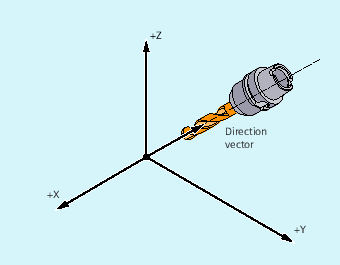

The term tool orientation describes the geometric alignment of the tool in space. The tool orientation on a 5-axis machine tool can be set by means of program commands.
Orientation rounding movements activated with OSD and OST are formed differently depending on the type of interpolation for tool orientation.
If vector interpolation is active, the smoothed orientation characteristic is also interpolated using vector interpolation. On the other hand, if rotary axis interpolation is active, the orientation is smoothed directly using rotary axis movements.
A change in tool orientation can be programmed by:
Direct programming of rotary axes A, B, C (rotary axis interpolation)
Euler or RPY angle
Direction vector (vector interpolation by specifying A3 or B3 or C3)
LEAD/TILT (face milling)
The reference coordinate system is either the machine coordinate system (ORIMKS) or the current workpiece coordinate system (ORIWKS).
| Orientation and path movement in parallel |
| Orientation and path movement consecutively |
| No orientation smoothing |
| Orientation constantly |
| Orientation smoothing only at beginning of block |
| Orientation smoothing at beginning and end of block |
| Velocity of the orientation change with orientation smoothing activated in degrees per mm (valid for |
| Smoothing of orientation by specifying smoothing distance with setting data: SD42674 $SC_ORI_SMOOTH_DIST |
| Smoothing of orientation by specifying angular tolerance in degrees for vector interpolation with setting data: SD42676 $SC_ORI_SMOOTH_TOL With rotary axis interpolation, the specified tolerance is assumed to be the maximum variance of the orientation axes. |
| Note |
All commands for smoothing the tool orientation ( |
If two or more blocks with orientation changes are programmed between the traversing blocks N10 and N20 (e.g. A2=... B2=... C2=...) programmed and ORIC is active, then the inserted circle block is distributed among these intermediate blocks according to the absolute changes in angle.
| Program code | Comment |
|---|---|
| ORIC | |
| N8 A2=… B2=… C2=… | |
| N10 X… Y… Z… | |
| N12 C2=… B2=…N14 C2=… B2=… | ; The circle block inserted at the external corner is distributed between N12 and N14, corresponding to the change in orientation. The circular motion and the orientation change are executed in parallel. |
| N20 X =…Y=… Z=… G1 F200 |
If ORID is active, then all blocks between the two traversing blocks are executed at the end of the first traversing block. The circle block with constant orientation is executed immediately before the second traversing block.
| Program code | Comment |
|---|---|
| ORID | |
| N8 A2=… B2=… C2=… | |
| N10 X… Y… Z… | |
| N12 A2=… B2=… C2=… | ; The N12 and N14 blocks are executed at the end of N10. The circle block is then executed with the actual orientation. |
| N14 M20 | ; Help functions, etc. |
| N20 X… Y… Z… |
| Note |
The method which is used to change orientation at an outer contour is determined using the program command that is active in the first traversing block of an outer corner. Without change in orientation: If the orientation is not changed at the block boundary, the cross-section of the tool is a circle, which touches both of the contours. |
| Program code | |
|---|---|
| ORIC | |
| N10 X …Y… Z… G1 F500 | |
| N12 X …Y… Z… A2=… B2=… C2=… | |
| N15 X …Y… Z… A2=… B2=… C2=… |
See also:
Tool orientation (ORIC, ORID, OSOF, OSC, OSS, OSSE, ORIS, OSD, OST): Further information